2026 Advanced Higher Biology - Paper 1 questions
Source: Scottish Qualifications Authority (SQA) / Qualifications Scotland. This is a StemInteract HTML companion, not an official HTML edition. Selectable text is supplied alongside original page images. Use the images or original PDF for equations, powers, fractions, vector notation, tables and diagrams; text extraction cannot fully preserve mathematical layout.
Jump to a question
PDF page 1
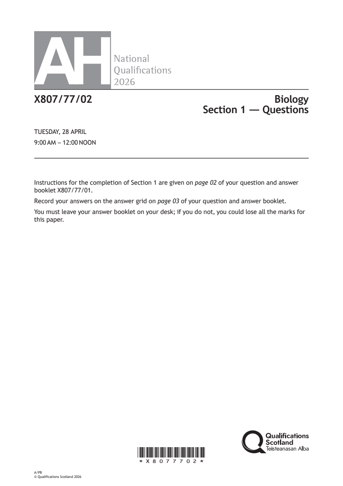
Selectable page text
AH
National
Qualications
2026
X807/77/02 Biology
Section 1 — Questions
TUESDAY, 28 APRIL
9:00 AM – 12:00 NOON
Instructions for the completion of Section 1 are given on page 02 of your question and answer
booklet X807/77/01.
Record your answers on the answer grid on page 03 of your question and answer booklet.
You must leave your answer booklet on your desk; if you do not, you could lose all the marks for
this paper.
*X8077702*
A/PB
© Qualifications Scotland 2026PDF page 2
Paper 1, Question 1Paper 1, Question 2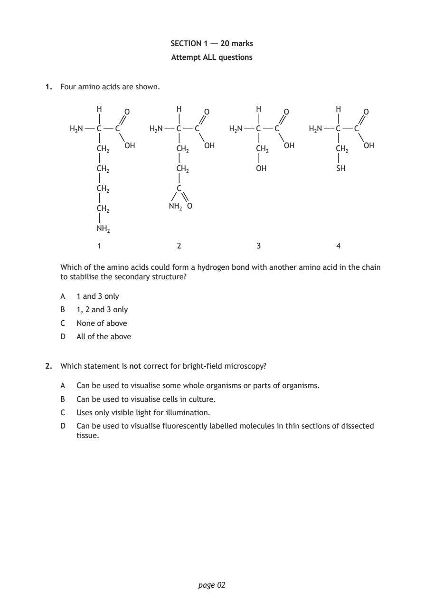
Selectable page text
SECTION 1 — 20 marks
Attempt ALL questions
1. Four amino acids are shown.
H H H H
O O O O
H₂N C C H₂N C C H₂N C C H₂N C C
OH OH OH OH
CH₂ CH₂ CH₂ CH₂
CH₂ CH₂ OH SH
CH₂ C
NH₂ O
CH₂
NH₂
1 2 3 4
Which of the amino acids could form a hydrogen bond with another amino acid in the chain
to stabilise the secondary structure?
A 1 and 3 only
B 1, 2 and 3 only
C None of above
D All of the above
2. Which statement is not correct for bright‑field microscopy?
A Can be used to visualise some whole organisms or parts of organisms.
B Can be used to visualise cells in culture.
C Uses only visible light for illumination.
D Can be used to visualise fluorescently labelled molecules in thin sections of dissected
tissue.
page 02PDF page 3
Paper 1, Question 3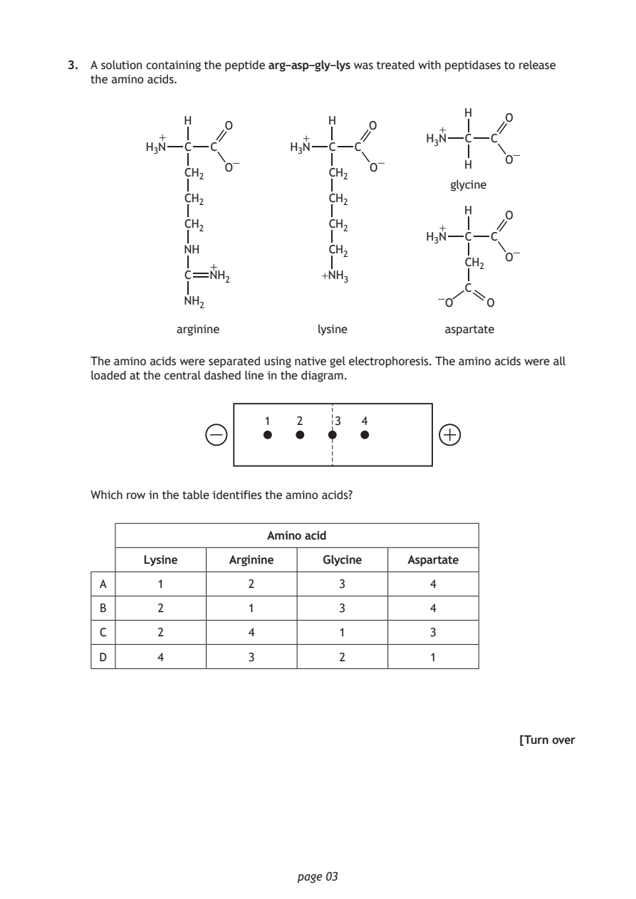
Selectable page text
3. A solution containing the peptide arg–asp–gly–lys was treated with peptidases to release
the amino acids.
H
H H O
O O
+
+ + H₃N C C
H₃N C C H₃N C C
−
O − O − H O
CH₂ CH₂
glycine
CH₂ CH₂
H
O
CH₂ CH₂ +
H₃N C C
NH CH₂ −
O
CH₂
+
C NH₂ +NH₃
C
−
NH₂ O O
arginine lysine aspartate
The amino acids were separated using native gel electrophoresis. The amino acids were all
loaded at the central dashed line in the diagram.
1 2 3 4
Which row in the table identifies the amino acids?
Amino acid
Lysine Arginine Glycine Aspartate
A 1 2 3 4
B 2 1 3 4
C 2 4 1 3
D 4 3 2 1
[Turn over
page 03PDF page 4
Paper 1, Question 4Paper 1, Question 5Paper 1, Question 6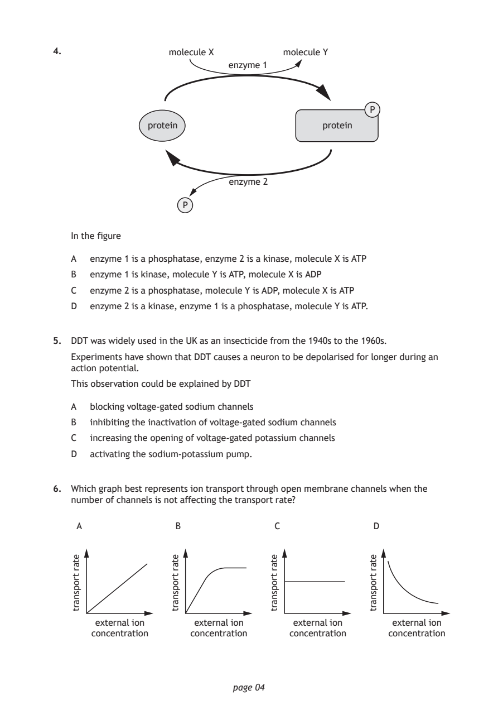
Selectable page text
4.
In the figure
A enzyme 1 is a phosphatase, enzyme 2 is a kinase, molecule X is ATP
B enzyme 1 is kinase, molecule Y is ATP, molecule X is ADP
C enzyme 2 is a phosphatase, molecule Y is ADP, molecule X is ATP
D enzyme 2 is a kinase, enzyme 1 is a phosphatase, molecule Y is ATP.
5. DDT was widely used in the UK as an insecticide from the 1940s to the 1960s.
Experiments have shown that DDT causes a neuron to be depolarised for longer during an
action potential.
This observation could be explained by DDT
A blocking voltage‑gated sodium channels
B inhibiting the inactivation of voltage‑gated sodium channels
C increasing the opening of voltage‑gated potassium channels
D activating the sodium‑potassium pump.
6. Which graph best represents ion transport through open membrane channels when the
number of channels is not affecting the transport rate?
external ion external ion external ion external ion
concentration concentration concentration concentration
page 04
etar
tropsnart
A
etar
tropsnart
B
etar
tropsnart
C
etar
tropsnart
molecule X molecule Y
enzyme 1
P
protein protein
enzyme 2
P
DPDF page 5
Paper 1, Question 7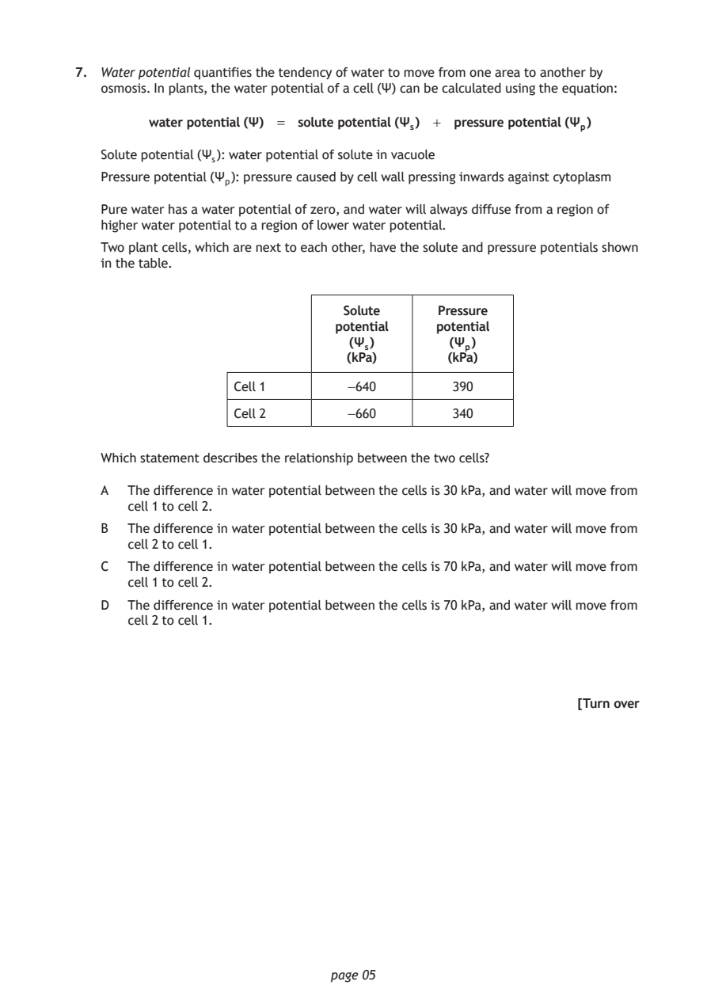
Selectable page text
7. Water potential quantifies the tendency of water to move from one area to another by
osmosis. In plants, the water potential of a cell (Ψ) can be calculated using the equation:
water potential (Ψ) = solute potential (Ψₛ) + pressure potential (Ψₚ)
Solute potential (Ψₛ): water potential of solute in vacuole
Pressure potential (Ψₚ): pressure caused by cell wall pressing inwards against cytoplasm
Pure water has a water potential of zero, and water will always diffuse from a region of
higher water potential to a region of lower water potential.
Two plant cells, which are next to each other, have the solute and pressure potentials shown
in the table.
Solute Pressure
potential potential
(Ψₛ) (Ψₚ)
(kPa) (kPa)
Cell 1 −640 390
Cell 2 −660 340
Which statement describes the relationship between the two cells?
A The difference in water potential between the cells is 30 kPa, and water will move from
cell 1 to cell 2.
B The difference in water potential between the cells is 30 kPa, and water will move from
cell 2 to cell 1.
C The difference in water potential between the cells is 70 kPa, and water will move from
cell 1 to cell 2.
D The difference in water potential between the cells is 70 kPa, and water will move from
cell 2 to cell 1.
[Turn over
page 05PDF page 6
Paper 1, Question 8Paper 1, Question 9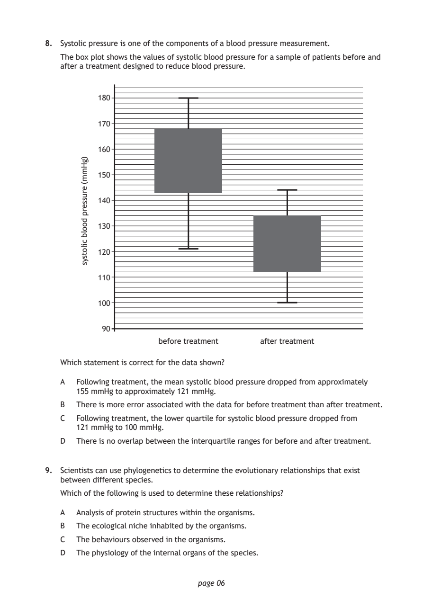
Selectable page text
8. Systolic pressure is one of the components of a blood pressure measurement.
The box plot shows the values of systolic blood pressure for a sample of patients before and
after a treatment designed to reduce blood pressure.
before treatment after treatment
page 06
)gHmm(
erusserp
doolb
cilotsys
180
170
160
150
140
130
120
110
100
90
Which statement is correct for the data shown?
A Following treatment, the mean systolic blood pressure dropped from approximately
155 mmHg to approximately 121 mmHg.
B There is more error associated with the data for before treatment than after treatment.
C Following treatment, the lower quartile for systolic blood pressure dropped from
121 mmHg to 100 mmHg.
D There is no overlap between the interquartile ranges for before and after treatment.
9. Scientists can use phylogenetics to determine the evolutionary relationships that exist
between different species.
Which of the following is used to determine these relationships?
A Analysis of protein structures within the organisms.
B The ecological niche inhabited by the organisms.
C The behaviours observed in the organisms.
D The physiology of the internal organs of the species.PDF page 7
Paper 1, Question 10Paper 1, Question 11Paper 1, Question 12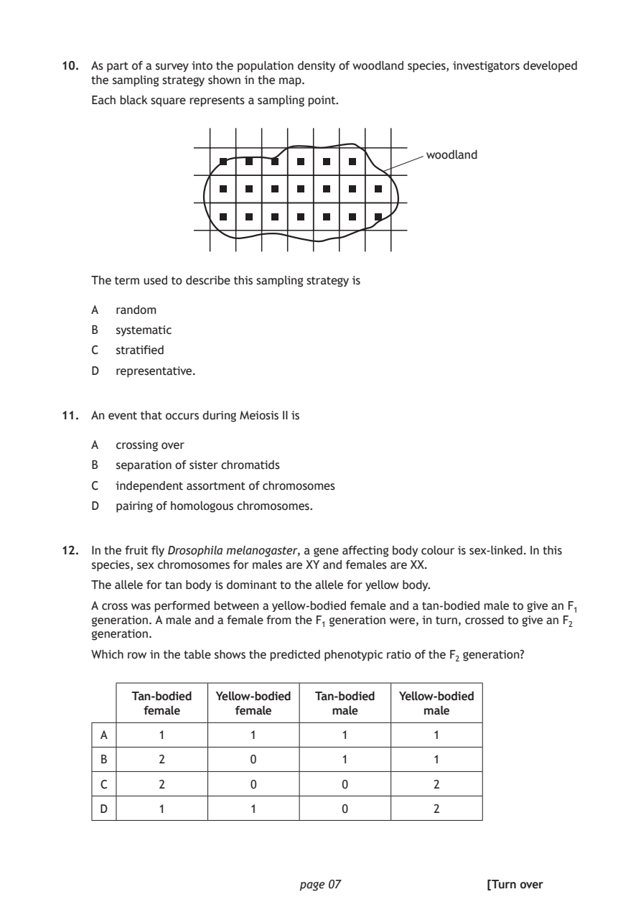
Selectable page text
10. As part of a survey into the population density of woodland species, investigators developed
the sampling strategy shown in the map.
Each black square represents a sampling point.
woodland
The term used to describe this sampling strategy is
A random
B systematic
C stratified
D representative.
11. An event that occurs during Meiosis II is
A crossing over
B separation of sister chromatids
C independent assortment of chromosomes
D pairing of homologous chromosomes.
12. In the fruit fly Drosophila melanogaster, a gene affecting body colour is sex‑linked. In this
species, sex chromosomes for males are XY and females are XX.
The allele for tan body is dominant to the allele for yellow body.
A cross was performed between a yellow‑bodied female and a tan‑bodied male to give an F₁
generation. A male and a female from the F₁ generation were, in turn, crossed to give an F₂
generation.
Which row in the table shows the predicted phenotypic ratio of the F₂ generation?
Tan‑bodied Yellow‑bodied Tan‑bodied Yellow‑bodied
female female male male
A 1 1 1 1
B 2 0 1 1
C 2 0 0 2
D 1 1 0 2
page 07 [Turn overPDF page 8
Paper 1, Question 13Paper 1, Question 14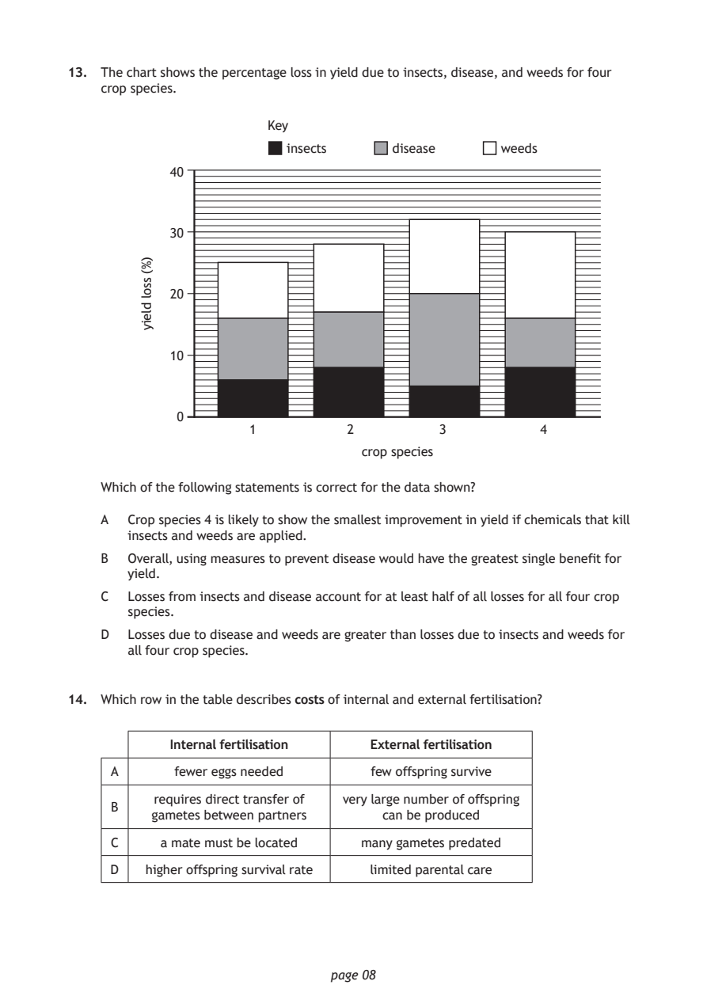
Selectable page text
13. The chart shows the percentage loss in yield due to insects, disease, and weeds for four
crop species.
page 08
)%(
ssol
dleiy
Key
insects disease weeds
40
30
20
10
0
1 2 3 4
crop species
Which of the following statements is correct for the data shown?
A Crop species 4 is likely to show the smallest improvement in yield if chemicals that kill
insects and weeds are applied.
B Overall, using measures to prevent disease would have the greatest single benefit for
yield.
C Losses from insects and disease account for at least half of all losses for all four crop
species.
D Losses due to disease and weeds are greater than losses due to insects and weeds for
all four crop species.
14. Which row in the table describes costs of internal and external fertilisation?
Internal fertilisation External fertilisation
A fewer eggs needed few offspring survive
requires direct transfer of very large number of offspring
B
gametes between partners can be produced
C a mate must be located many gametes predated
D higher offspring survival rate limited parental carePDF page 9
Paper 1, Question 15Paper 1, Question 16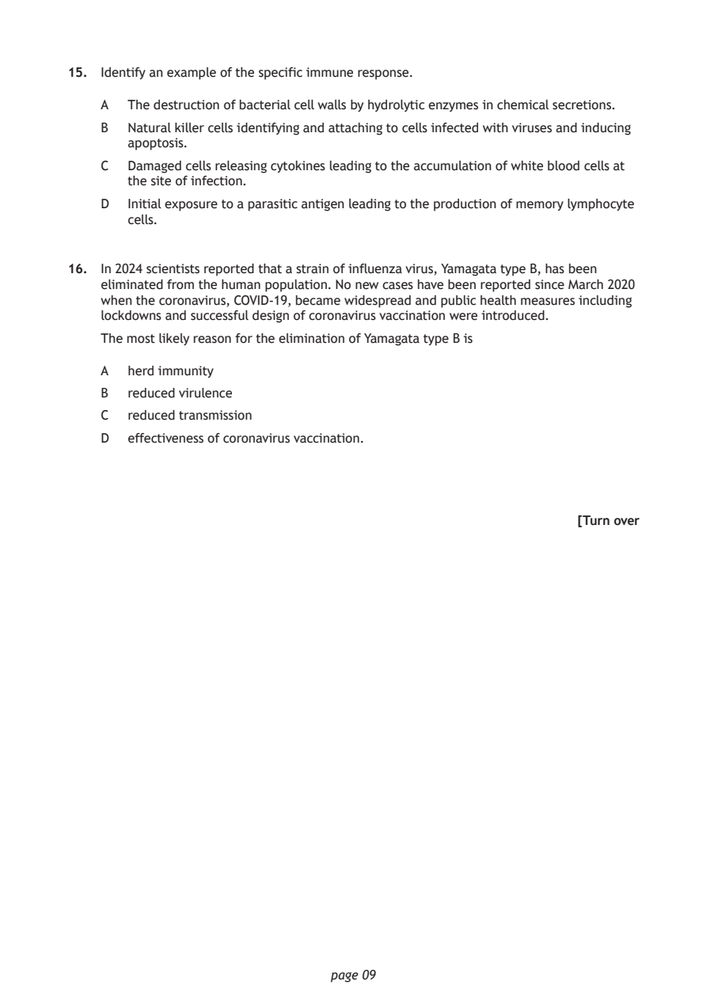
Selectable page text
15. Identify an example of the specific immune response.
A The destruction of bacterial cell walls by hydrolytic enzymes in chemical secretions.
B Natural killer cells identifying and attaching to cells infected with viruses and inducing
apoptosis.
C Damaged cells releasing cytokines leading to the accumulation of white blood cells at
the site of infection.
D Initial exposure to a parasitic antigen leading to the production of memory lymphocyte
cells.
16. In 2024 scientists reported that a strain of influenza virus, Yamagata type B, has been
eliminated from the human population. No new cases have been reported since March 2020
when the coronavirus, COVID‑19, became widespread and public health measures including
lockdowns and successful design of coronavirus vaccination were introduced.
The most likely reason for the elimination of Yamagata type B is
A herd immunity
B reduced virulence
C reduced transmission
D effectiveness of coronavirus vaccination.
[Turn over
page 09PDF page 10
Paper 1, Question 17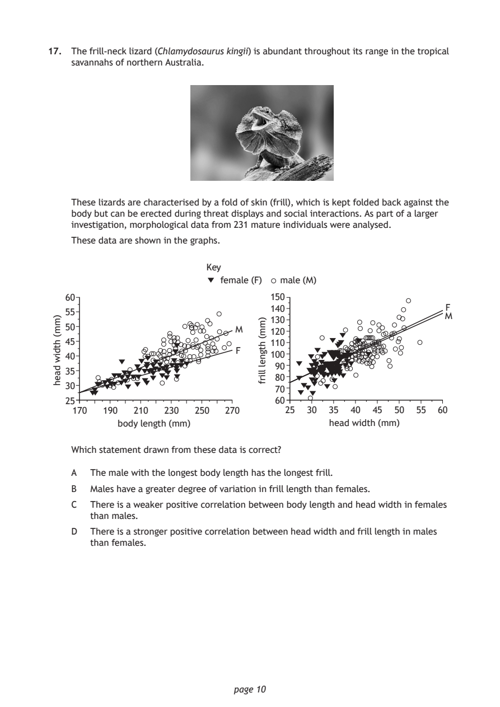
Selectable page text
17. The frill‑neck lizard (Chlamydosaurus kingii) is abundant throughout its range in the tropical
savannahs of northern Australia.
These lizards are characterised by a fold of skin (frill), which is kept folded back against the
body but can be erected during threat displays and social interactions. As part of a larger
investigation, morphological data from 231 mature individuals were analysed.
These data are shown in the graphs.
60 150
140
55
130
50 120
45 110
40 100
90
35
80
30
70
25 60
170 190 210 230 250 270 25 30 35 40 45 50 55 60
body length (mm)
page 10
)mm(
htdiw
daeh
)mm(
htgnel
llirf
Key
female (F) male (M)
F
M
M
F
head width (mm)
Which statement drawn from these data is correct?
A The male with the longest body length has the longest frill.
B Males have a greater degree of variation in frill length than females.
C There is a weaker positive correlation between body length and head width in females
than males.
D There is a stronger positive correlation between head width and frill length in males
than females.PDF page 11
Paper 1, Question 18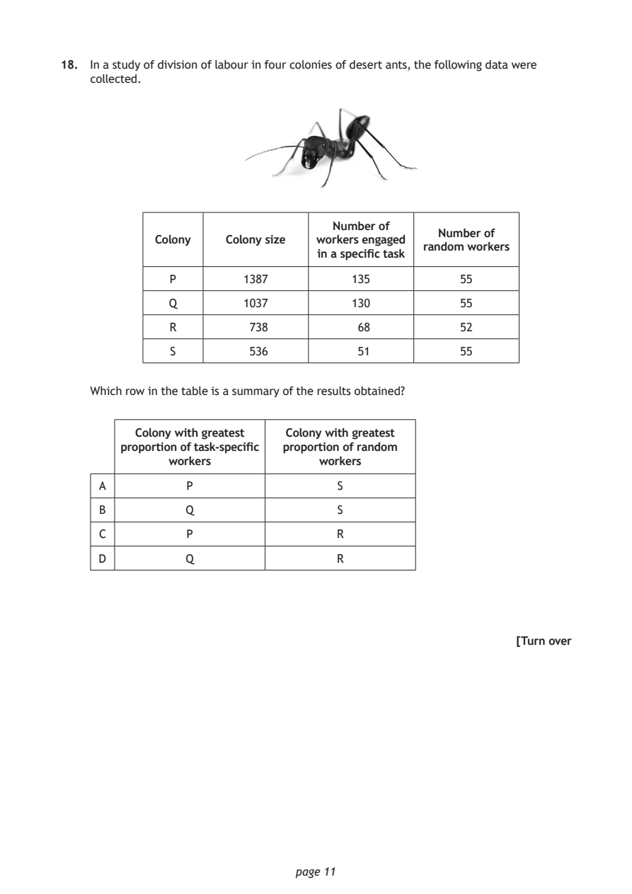
Selectable page text
18. In a study of division of labour in four colonies of desert ants, the following data were
collected.
Number of
Number of
Colony Colony size workers engaged
random workers
in a specific task
P 1387 135 55
Q 1037 130 55
R 738 68 52
S 536 51 55
Which row in the table is a summary of the results obtained?
Colony with greatest Colony with greatest
proportion of task‑specific proportion of random
workers workers
A P S
B Q S
C P R
D Q R
[Turn over
page 11PDF page 12
Paper 1, Question 19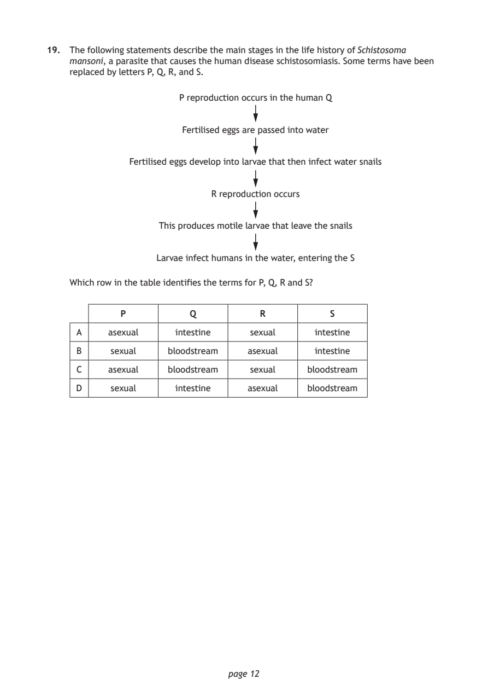
Selectable page text
19. The following statements describe the main stages in the life history of Schistosoma
mansoni, a parasite that causes the human disease schistosomiasis. Some terms have been
replaced by letters P, Q, R, and S.
P reproduction occurs in the human Q
Fertilised eggs are passed into water
Fertilised eggs develop into larvae that then infect water snails
R reproduction occurs
This produces motile larvae that leave the snails
Larvae infect humans in the water, entering the S
Which row in the table identifies the terms for P, Q, R and S?
P Q R S
A asexual intestine sexual intestine
B sexual bloodstream asexual intestine
C asexual bloodstream sexual bloodstream
D sexual intestine asexual bloodstream
page 12PDF page 13
Paper 1, Question 20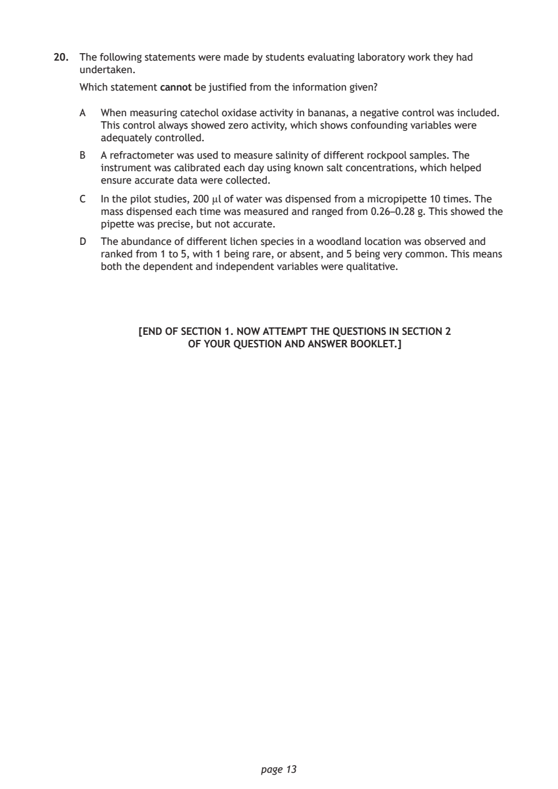
Selectable page text
20. The following statements were made by students evaluating laboratory work they had
undertaken.
Which statement cannot be justified from the information given?
A When measuring catechol oxidase activity in bananas, a negative control was included.
This control always showed zero activity, which shows confounding variables were
adequately controlled.
B A refractometer was used to measure salinity of different rockpool samples. The
instrument was calibrated each day using known salt concentrations, which helped
ensure accurate data were collected.
C In the pilot studies, 200 µl of water was dispensed from a micropipette 10 times. The
mass dispensed each time was measured and ranged from 0.26–0.28 g. This showed the
pipette was precise, but not accurate.
D The abundance of different lichen species in a woodland location was observed and
ranked from 1 to 5, with 1 being rare, or absent, and 5 being very common. This means
both the dependent and independent variables were qualitative.
[END OF SECTION 1. NOW ATTEMPT THE QUESTIONS IN SECTION 2
OF YOUR QUESTION AND ANSWER BOOKLET.]
page 13PDF page 14
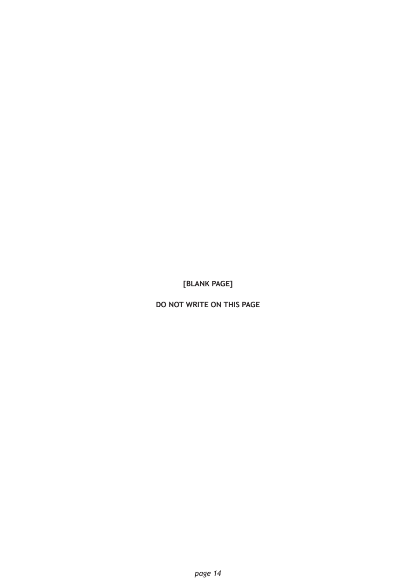
Selectable page text
[BLANK PAGE]
DO NOT WRITE ON THIS PAGE
page 14PDF page 15
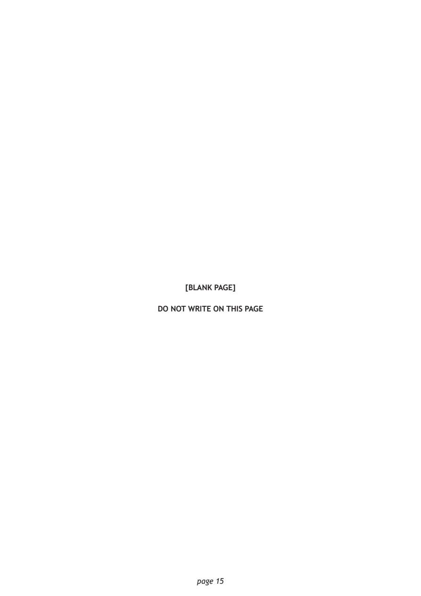
Selectable page text
[BLANK PAGE]
DO NOT WRITE ON THIS PAGE
page 15PDF page 16
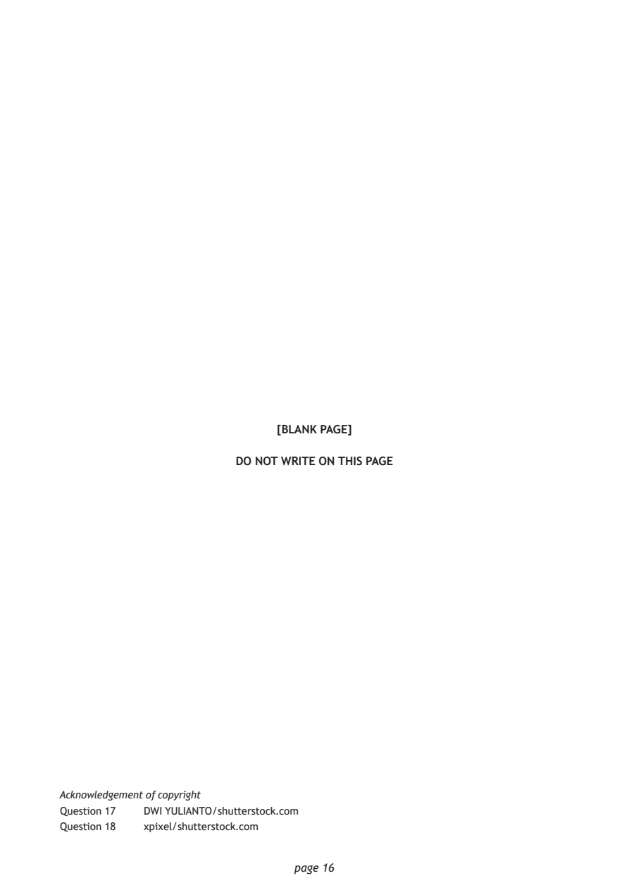
Selectable page text
[BLANK PAGE]
DO NOT WRITE ON THIS PAGE
Acknowledgement of copyright
Question 17 DWI YULIANTO/shutterstock.com
Question 18 xpixel/shutterstock.com
page 16